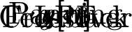

This documentation is a work in progress
1. Getting Started
ZynAddSubFX is a fairly complex software synthesizer with a very large number of controls. As such, it is not alway obvious how to use ZynAddSubFX.
Many applications under Linux transport MIDI over ALSA and transmit audio over JACK. ZynAddSubFX can be run in this configuration by running:
zynaddsubfx -I alsa -O jack -a
This sets the input driver to be alsa and the output driver to be jack, which should attempt to autoconnect to your soundcard as per the -a flag. If this is your first time running ZynAddSubFX, you will see a screen that lets you choose between the advanced and beginner interface. Currently the beginner interface is deprecated, so the advanced one is recommended.
Now you should be able to see ZynAddSubFX’s main window, from which you can setup patches, effects, and general configurations, but more importatnly it provides links into the parameters of the patches. ZynAddSubFX is a powerful tool with a number of base patches, but its true power lies in the ability to make your own patches.

For basic usage, you will want to use the button to the right of the enabled label. This button will allow for one to select the desired instrument from the banks that ZynAddSubFX has available. To play notes in ZynAddSubFX, either utilize the builtin virtual keyboard (accessible via the vK button) or connect your keyboard to the system and use aconnect to connect it to ZynAddSubFX (assuming that ALSA was used).
This main window provides access to a number of more advanced features. Some of these features are:
-
System Effects
-
Insertion Effects
-
Recording
-
Part Settings (instrument level settings)
-
Master Settings
-
Microtonal Settings
For instance to use the recording feature, a wave file must be selected from the recording menu and then the recording can be started with the record button and stopped with the stop button. This is a simple and quick way of recording some samples from ZynAddSubFX, though there are more full featured options available via JACK recording tools.
|
Note
|
After hitting record, the wave file will not start recording until a new key has been pressed via either an external midi source or the virtual keyboard Both system and insertion effects can be accessed, the properties are available as well as properties of each instrument. |
2. Filters
ZynAddSubFX offers several different types of filters, which can be used to shape the spectrum of a signal. The primary parameters that affect the characteristics of the filter are the cutoff, resonance, filter stages, and the filter type.
-
Cutoff: This value determines which frequency marks the changing point for the filter. In a low pass filter, this value marks the point where higher frequencies are attenuated.
-
Resonance: The resonance of a filter determines how much excess energy is present at the cutoff frequency. In ZynAddSubFX, this is represented by the Q-factor, which is defined to be the cutoff frequency divided by the bandwidth. In other words higher Q values result in a much more narrow resonant spike.
-
Stages: The number of stages in a given filter describes how sharply it is able to make changes in the frequency response.
The basic analog filters that ZynAddSubFX offers are shown below, with the center frequency being marked by the red line. The state variable filters should look quite similar.

As previously mentioned, the Q value of a filter affects how concentrated the signal’s energy is at the cutoff frequency; The result of differing Q values are below.
|
Tip
|
For many classical analog sounds, high Q values were used on sweeping filters. A simple high Q low pass filter modulated by a strong envelope is usually sufficient to get a good sound. |

Lastly, the affect of the order of the filter can be seen below. This is roughly synonymous with the number of stages of the filter. For more complex patches it is important to realize that the extra sharpness in the filter does not come for free as it requires many more calculations being performed; This phenomena is the most visible in subsynth, where it is easy to need several hundred filter stages to produce a given note.

There are different types of filters. The number of poles define what will happen at a given frequency. Mathematically, the filters are functions which have poles that correspond to that frequency. Usually, two poles mean that the function has more "steepness", and that you can set the exact value of the function at the poles by defining the "resonance value". Filters with two poles are also often referenced as Butterworth Filters.
2.1. User Interface

-
C.freq: Cutoff frequency
-
Q: Level of resonance for the filter
-
V.SnsA.: Velocity sensing amount for filter cutoff
-
V.Sns.: Velocity sensing function
-
freq.tr: Frequency tracking amount. When this parameter is positive, higher note frequencies shift the filter’s cutoff frequency higher.
-
gain: Additional gain/attenuation for filter
-
St: Filter stages
|
Note
|
TODO add a lengthy section on the formant filter setup |
3. LFO
3.1. Introduction
"LFO" means Low Frequency Oscillator. These oscillators are not used to make sounds by themselves, but they changes somes parameters (like the frequencies, the amplitudes or the filters).
The LFOs has some basic parameters:
-
Delay: This parameter sets how much time takes since the start of the note to the start of the LFO
-
Start Phase: The possition that a LFO will start at
-
Frequency: How fast the LFO is (i.e. how fast the parameter’s controlled by the LFO changes)
-
Depth: The amplitude of the LFO (i.e. how much the parameter’s controlled by the LFO changes)

Another important LFO parameter is the shape. There are many LFO Types according to the shape. ZynAddSubFX supports the folowing LFO shapes:

Another parameter is the LFO Randomness. It modifies the LFO amplitude or the LFO frequency at random. In ZynAddSubFX you can choose how much the LFO frequency or LFO amplitude changes by this parameter. In the folowing images are shown some examples of randomness and how changes the shape of a triangle LFO.

Other parameters are:
-
Continous mode: If this mode is used, the LFO will not start from "zero" on each new note, but it will be continuous. This is very usefull if you apply on filters to make interesting sweeps.
-
Stretch: It controlls how much the LFO frequency changes according to the note’s frequency. It can vary from negative stretch (the LFO frequency is decreased on higher notes) to zero (the LFO frequency will be the same on all notes) to positive stretch (the LFO frequency will be increased on higher notes).
3.2. User Interface
In ZynAddSubFX, LFO parameters are shown as:

Theese parameters are:
-
Freq: LFO Frequency
-
Depth: LFO Depth
-
Start: LFO Start Phase - If this knob is at the lowest value, the LFO Start Phase will be random.
-
Delay: LFO Delay
-
A.R.: LFO Amplitude Randomnes
-
F.R.: LFO Frequency Randomness
-
C.: LFO Continous Mode
-
Str.: LFO Stretch - in the image above the LFO stretch is set to zero
4. Envelopes
4.1. Introduction
Envelopes control how the amplitude, the frequency, or the filter changes over time.
4.2. Amplitude Envelopes
These envelopes controls the amplitude of the sound. In ZynAddSubFX, amplitude envelopes can be linear or logarithmic. In the next image, it is shown the differences between these envelopes.

The amplitude envelope is divided into:
-
Attack: Begins at the Note On. The volume starts from 0 to the maximum. In ZynAddSubFX, the attack is always linear.
-
Decay: The volume drops from the maximum value to a level called "Sustain level"
-
Sustain: The volume remains constant until the key is depressed (Note Off). After this, the last stage take place.
-
Release: The volume drops to zero
4.3. Frequency Envelopes
These envelopes controls the frequency (more exactly, the pitch) of the oscillators. The following picture draws the stages of these envelopes.

The dotted line represents the real pitch of the sound without the envelope.
The frequency envelopes are divided into 3 stages:
-
Attack: Begins at the Note On. The frequency starts from a certain value and glides to the real frequency of the note.
-
Sustain: The frequency is the same on over the sustain period
-
Release: This stage begins on Note Off and glides the frequency of the note to a certain value
4.4. Filter Envelopes
These envelopes controls the cutoff frequency of the filters and are divided into

-
Attack: Begins at the Note On. The cutoff frequency starts from a certain value and glides to another value
-
Decay: The cutoff frequency continues to glide to the real cutoff frequency value of the filter (dotted line)
-
Sustain: the cutoff frequency is the same on over the sustain period (dotted line)
-
Release: this stage begins on Note Off and glides the filter cutoff frequency of the note to a certain value
4.5. Freemode Envelopes
For all envelope there is a mode that allows the user to set an arbitrary number of stages and control points. This mode is called Freemode.

Only stage that always remains defined is the Sustain, where the envelopes freezes until a Note Off event.
4.6. User Interface
All the envelope types has some common controls:
-
E: Shows a window that you can view the real envelope shape or convert to free mode to edit it
-
Stretch: How the envelope is stretched according the note. On the higher notes the envelopes are shorter than lower notes. In the leftmost value, the stretch is zero. The rightmost use a stretch of 200%; this means that the envelope is stretched about 4 times/octave.
-
frcR: Forced release. This means that if this option is turned on, the release will go to the final value, even if the sustain stage is not reached. Usually, this must be set.
The parameters for Amplitude Envelopes for ZynAddSubFX are:

-
A.dt: Attack duration
-
D.dt: Decay duration
-
S.Val: Sustain value
-
R.dt: Release time
-
L: If this option is set, the envelope is linear, otherwise, it will be logarithmic
For Frequency Envelopes the interface has the following parameters:

-
A.val: Attack value
-
A.dt: Attack duration
-
R.dt: Release time
-
R.val: Release value
Filter Envelopes has the parameters:

-
A.val: Attack value
-
A.dt: Attack duration
-
D.val: Decay value
-
D.dt: Decay time
-
R.dt: Release time
-
R.val: Release value
The Freemode envelopes has a separate window to set the parameters and controls:

-
Control points: You can move the points using the mouse. In the right on the windows, it is shown the total duration of the envelope. If the mouse button will be pressed on a control point, it will be shown the duration of the stage where the point is.
-
FreeMode: this button activates or deactivates the freemode mode.
-
Add Point: Adds the point next to the current selected point. You can select a point by clicking on it.
-
Delete point: Removes the point from the envelope.
-
Sust.: Set the sustain point. It is shown using the yellow line.
-
Str.: Envelope stretch
5. AdSynth
AdSynth, a primarily additive synthesis engine, is one of the three major synthesis engines available in ZynAddSubFX. The basic concept of this engine is the summation of a collection of voices, each of which consist of oscillators.
5.1. High Level (Global)
AdSynth’s global level consists of the elements shown in the below figure:

The global level of adsynth is almost entirely composed of previously discussed elements. However a few new features appear here, this includes velocity sensing, punch, detune options and realative bandwidth , and resonance.

Velocity sensing is simply an exponental transformation from the note’s velocity to some parameter change. The below diagram shows how the velocity senseing controls affects this translation over the whole range of possible note velocities.

The puch of a note in AdSynth is a constant amplification to the output at the start of the note, with its length determined by the punch time and stretch and the amplitude being determined by the punch strength and velocity sensing. The relBW control in the frequency pane is effectively a multiplier for detuning all voices within an adnote.
|
Note
|
TODO Talk about resonance |
The sum of the voices are passed through filters and amplification to produce the final sound. This could lead one to think that ad-note is just a bunch of minor postprocessing and at this level much of the sound generation is hidden.
5.2. Voices
The voice gives access to a similar setup to the global parameters and then some more, such as the modulator, oscillator, and unison features.

5.2.1. Modulation
Within the options for modulation, one can select:
-
Morph
-
Ring Modulation
-
Phase Modulation
-
Frequency Modulation
-
Disabled
5.2.2. Unison
Unison is useful in creating the chorus like sound of many simultaneous oscillators
5.3. Oscillator
The oscillator is lets you choose the basic waveform, which oscillates while the sound is playing and is then further modified.

5.3.1. Types of Waveshaping
Waveshaping can be done using the Wsh area in the Oscillator editor.
The type of distortion has much influence on how the overtones are being placed. Sometimes, you get a "fat" bass, and sometimes, high frequencies are added, makeing the sound "crystal clear".
Atan & Sigmoid
This is the default setting. It is an easy way to apply loudness to a wave without getting undesired high overtones. Thus, it can be used both for making instruments that sound like "real" ones, but also for electronic music. The transformation turns, roughly said, every amplitude into a square amplitude. Thus, sine, power, pulse and triangle turn into a usual square wave, while a saw turns into a phased square wave. A chirp wave turns into a kind of phase modulated square wave.
Quants
Quantization adds high overtones early. It can be seen as an unnatural effect, which is often used for electronic music.
The transformation is a bit similar to building the lower sum of a wave, mathematically said. This means that the transformation effect turns your "endless high" sampled wave into only a few samples. The more distortion you will apply, the less samples will be used. Indeed, this is equivalent to say that more input amplification is used. To see this, here is a small sample of code, where "ws" is the (correctly scaled amount of input amplification, and "n" the number of original samples.
for(i = 0; i < n; ++i) smps[i] = floor(smps[i] / ws + 0.5f) * ws;
|
Note
|
If you turn on quantisation very high, you might be confused that, especially high notes, make no sound. The reason: High frequencies are "forgotten" if you sample with only few samples. Also, the sign of an amplitude can be forgotten. This behaviour might make some quantisations a bit unexpected. |
Limiting & Clipping
Limiting usually means that for a signal, the amplitude is modified because it exceeds its maximum value. Overdrive, as often used for guitars, is often achieved by limiting: It happens because an amplifier "overdrives" the maximum amplitude it can deliver.
ZynAddSubFX has two types of limiting. Soft limiting, here as Lmt, means that the sound may not exceed a certain value. If the amplitude does so, it will simply be reduced to the limiting value. The overtones are generated in the lower frequencies first.
Hard limiting, is also called clipping and abbreviated Clip. This means that if the maximum is exceeded, instead of being constant at the limiting value, the original signal still has some influence on the output signal. Still, it does not exceed the limiting value. For ZynAddSubFX, a signal exceeding the limiting value will continue to grow "in the negative". This leads to overtones being generated on the full frequency band.
6. Controller

6.1. General
-
ModWh: Modullation Wheel depth
-
Exp MWh: Exponental Modulation Wheel (changes modulation scale to exponental)
-
BwDpth: Bandwidth Depth
-
Exp BW: Exponental Bandwidth (changes badwidth scale to exponental)
-
PanDpth: Panning Depth
-
FltQ: Filter Q (ressonance) depth
-
FltCut Filter Cutoff frequency depth
-
Expr: enable/disable expression
-
Vol: enable/disable receiving volume controller
-
FMamp: enable/disable receiving Modulation Amplitude controller (76)
-
Sustain: enable/disable sustain pedal
-
PWheelB.Rng (cents): Pitch Wheel Bend Range (cents; 100 cents = 1 halftone)
6.2. Portamento
-
Rcv.: If the part receives portamento On/Off (65) controller
-
time: The duration of the portamento
-
thresh: The threshold of the portamento. It represents the minimum or the maximum number of halftones (or hundried cents) required to start the portamento. The difference is computed between the last note and current note.
-
th.type: The threshold type. Checked means that the portamento activates when the difference of frequencies is above the threshold ("thresh"); not checked is for below the threshold.
|
Note
|
The threshold refers to the frequencies and not to MIDI notes (you should consider this if you use microtonal scales). |
6.2.1. Proportinal Portamento
-
Propt.: If the portamento is proportinal to ratio of frequencies
-
Prp. Rate: Ratio needed to double the time of portamento
-
Prp. Dpth: The divergence from
6.3. Resonance
-
CFdpth: resonance center controller depth
-
BWdpth: resonance bandwidth controller depth
7. Effects
Effects are, generally, blackboxes that transform audio signals in a specified way. More exactly, the only input data for an effect in ZynAddSubFX is:
-
an array of samples, which is read on line
-
the current system time (used for LFOs)
The output is the transformed array of samples.
|
Note
|
As described, effects have no information about anything else. For example, key presses are not recognized. Therefore, pressing a key does not initiate the LFO. Phase knobs will always be relative to a global LFO, which is only dependent on the system time. |
ZynAddSubFX has 3 types of effects:
-
System Effects
-
Insertion Effects
-
Instrument Effects
TODO: Describe these 3 types (their differences).
7.1. General topics
-
Wetness determines the mix of the results of the effect and its input. This mix is made the effects output. If an effect is wet, it means that nothing of the input signal is bypassing the effect. If it is dry, then the effect has no effect. TODO: Difference between Volume and D/W?
-
Pan lets you apply panning, which means that the sound source can move to the right or left. Set it to 0.0 to only hear output on the right side, or to the maximum value to only hear output on the left side.
-
LRc. or L/R let you apply crossover.
-
Filter stages are the number of times that this filter is applied in series. So, if this number is 1, you simply have this one filter. If it is two, the sound first passes the filter, and the results then pass the same filter again. In ZynAddSubFX, the wetness is applied after all stages were passed.
-
LFOs are, as the name says, oscillators with, compared to the frequency of the sound, low frequency. They often appear in order to control the effect. They can have some of the following controls:
-
LFO Type determines the shape of the LFO. If not present, the LFO is a sine wave.
-
Freq determines the LFO’s frequency.
-
Dpth is a multiplier to the LFO. Thus, it determines the LFOs amplitude and its influence.
-
Rnd is the LFO amplitude’s randomness
-
St.df lets you determine how much left and right LFO are phase shifted. 64.0 means stereo, higher values increase the right LFO relatively to the left one.
-
7.2. Equalizer
7.2.1. Introduction
An equalizer is a filter effect that applies different volume to different frequencies of the input signal. This can, for example, be used to "filter out" unwanted frequencies. ZynAddSubFX’s implementations follow the "Cookbook formulae for audio EQ" by Robert Bristow-Johnson.
7.2.2. Filter Types
This topic is completely discussed in the Filters section.
7.2.3. Usage
We describe all parts of the GUI here. The term passband (or often just "band") refers to the amount of frequencies which are not significantly attenuated by the filter.
-
Gain (on the left) defines an offset which is added to the complete filter.
-
B. lets you choose the passband number. Multiple passbands define one filter. This is important if you want multiple filters to be called after each other. Note that filters are commutative.
-
T. lets you choose the current filter’s type, as described above.
-
Freq describes the frequencies where the filter has its poles. For some filters, this is called the "cutoff" frequency. Note, however, that a bandpass filter has two cutoff frequencies.
-
Gain is only active for some filters and sets the amount of a special peak these filters have. Note that for those filters, using the predefined gain makes them effectless.
-
Resonance lets you describe a peak at the given frequency for filters with 2 poles. This can be compared to real physical objects that have more gain at their resonance frequency.
-
St. lets you define multiple filter stages. This is equivalent to having multiple copies of the same filter in sequence.
7.3. Chorus
7.3.1. Introduction
In a chorus, many people sing together. Even if each of them sings at exactly the same frequency, all their voices usually sound different. We say they have a different timbre. Timbre is the way we perceive sound and makes us differ between different music instruments. This is, physically, achieved by varying both the amplitude envelope and the frequency spectrum. Multiple sounds with slightly different timbres make a sound more shimmering, or powerful. This is called the chorus effect.
7.3.2. Function
The chorus effect can be achieved by multiple people singing together. In a concert, there are many instruments, resulting in the same effect. When making electronic music, we only have an input wave and need to generate these different timbres by ourselves. ZynAddSubFX therefore simply plays the sound, pitch modulated by an LFO, and adds this to the original sound. This explains the diagram below: The multiple pitches are generated by a delayed version of the input. This version is being pitched by an LFO. More detailled, this pitch is generated by varying the reading speed of the delayed sound; the variation amount is controlled by an LFO.
 describes the delay.")
TODO: Add LFO pointing to delay?
Related effects to Chorus are Flangers. Flangers can be described as Chorus with very short LFO delay and little LFO depth. You can imagine a flanger as two copies of a sound playing at almost the same time. This leeds to interference, which can be clearly heared. It is popular to apply flangers to guitars, giving them more "character".
7.3.3. Usage
-
First, crossover is applied.
-
The following 5 knobs (Freq, Rnd, LFO Type, St.df, Depth) control the LFO for the pitch. If the depth is set to zero, the pitch will not be changed at all.
-
Delay is the time that the delayed sound is delayed "on average". Note that the delay also depends on the current pitch.
-
After the correct element of the sound buffer is found using the LFO, the Fb knob lets you set how loud it shall be played. This is mostly redundant to the D/W knob, but we have not applied panning and substraction yet.
-
Next, the singal can be negated. If the Substract Checkbox is activated, the amplitude is multiplied by -1.
-
Finally, Pan lets you apply panning.
7.4. Distortion
7.4.1. Introduction
Distortion means, in general, altering a signal. Natural instruments usually produce sine like waves. A wave is transformed in an unnatural way when distortion is used. The most distorted waves are usually pulse waves. It is typical for distortion to add overtones to a sound. Distortion often increases the power and the loudness of a signal, while the db level is not increased. This is an important topic in the Loudness War.
|
Note
|
As distortion increases loudness, distorted music can cause ear damage at lower volume levels. Thus, you might want to use it a bit careful. |
Distortion can happen in many situations when working with audio. Often, this is not wanted. In classical music, for example, distortion does not occur naturally. However, distortion can also be a wanted effect. It is typical for Rock guitars, but also present in electronic music, mostly in Dubstep and DrumNBass.
The basic components of distortion are mainly
-
a preamplifier
-
the waveshaping function
-
filters
Preamplification changes the volume before the wave is shaped, and is indeed the amount of distortion. For example, if you clip a signal, the louder the input gets, the more distortion you will get. This can have different meanings for different types of distortions, as described below.
7.4.2. Types of Distortion
This topic is completely discussed in the Oscillator Section. Note that you can use the Oscillator editor in order to find out what your distortion effect does. Also note that while the Oscillator editor’s distortion is limited to some oscillators you can produce in the Oscillator editor, the distortion effect can be used on every wave that you can generate with ZynAddSubFX.
7.4.3. Function
We explain the functionality in a diagram and list the components below.

-
Negation is the first thing to happen. If the Neg Checkbox is activated, the amplitude is multiplied by -1.
-
Panning is applied. Note, however, that you have to activate the Stereo Checkbox, labeled St, before.
-
Pre amplification is done next. The amount can be changed using the Drive nob. Indeed, this is the amount of distortion. For example, if you clip a signal, the louder the input gets, the more distortion you will get. This can have different meanings for different types of distortion, as described above.
-
HPF and LPF are filters with 2 poles. Whether they are used before or after the waveshape, depends on the checkbox labeled PF.
-
The next step is the wave shape. This defines how the wave is actually modified. The Type ComboBox lets you define how. We will discuss some types below.
-
After the wave shape, we scale the level again. This is called output amplification. You can change the value using the Level knob.
-
Crossover is the last step. This is controlled by the knob LR Mix and means that afterwards, a percentage of the left side is applied to the right side, and, synchronously, the other way round. It is a kind of interpolation between left and right. If you set the LR Mix to 0.0, you will always have a stereo output.
7.5. Dynamic Filter
7.5.1. Introduction
A dynamic filter is, as the name says, a filter which changes its parameters dynamically, dependent on the input and current time. In ZynAddSubFX, frequency is the only variable parameter. It can be used as an "envelope following filter" (sometimes referenced "Auto Wah" or simply "envelope filter").
7.5.2. Function
Though this filter might look a bit complicated, it is actually easy. We divide the parameters into two classes:
-
Filter Parameters are the ones you get when you click on Filter. They give the filter its basic settings.
-
Effect Parameters are the other ones that control how the filter changes.
The filter basically works like this: The input signal is passed through a filter which dynamically changes its frequency. The frequency is an additive of:
-
the filter’s base frequency
-
an LFO from the effect parameters
-
the "amplitude" of the input wave

The amplitude of the input wave is not the current amplitude, but the so called "Root Mean Square (RMS)" value. This means that we build a mean on the current amplitude and the past values. How much the new amplitude takes influence is determined by the Amplitude Smoothness (see below).
7.5.3. Usage
-
The 4 knobs in the middle (Freq, Rnd, LFO Type, St.df) control the LFO.
-
Two knobs let you control the way how the RMS value of the amplitudes is measured:
-
A.M sets the Amplitude Smoothness (this is described above). The higher you set this value, the more slow will the filter react.
-
A.Inv., if being set, negates the (absolute) RMS value. This will lower the filter frequency instead of increasing it. Note that this will not have much effect if the effects input is not very loud.
-
-
The following controls define the mix of the LFO and the amplitude.
-
A.S sets the Amplitude Sensing (i.e. how much influence the amplitude shall have).
-
LfoD sets the LFO depth.
-
-
The filter button lets you choose the filter type.
-
After the input signal has passed through the filter, Pan can apply panning.
7.6. Echo
7.6.1. Introduction
The echo effect, also known as delay effect, simulates the natural reflection of a sound. The listener can hear the sound multiple times, usually decreasing in volume. Echos can be useful to fill empty parts of your songs with.
7.6.2. Function
In ZynAddSubFX, the echo is basically implemented as the addition of the current sound and a delayed version of it. The delay is implemented as in the picture below. First, we add the delayed signal to the effect input. Then, they pass an LP1. This shall simulate the effect of dampening, which means that low and especially high frequencies get lost earlier over distance than middle frequencies do. Next, the sound is delayed, and then it will be output and added to the input.

7.6.3. Description
-
Pan lets you apply panning of the input.
-
Delay sets the time for one delay.
-
LRdl. means Left-Right-Delay. If it is set to the middle, then both sides are delayed equally. If not, then the left echo comes earlier and the right echo comes (the same amount) later than the average echo; or the other way round. Set the knob to 0 to hear on the right first.
-
LRc. applies crossover.
-
Feedback describes how much of the delay is added back to the input. Set Fb. to the maximum to hear an infinite echo, or to the minimum to just hear a single repeat.
-
The Damp value lets the LP1 reject higher frequencies earlier if increased.
7.7. Reverb
7.7.1. Introduction
A Reverberation actually expresses the effect of many echoes being played at the same time. This can happen in an enclosed room, where the sound can be reflected in different angles. Also, in nature, thunders approximate reverbs, because the sound is reflected in many different ways, arriving at the listener at different times.
In music, reverbs are popular in many ways. Reverbs with large room size can be used to emulate sounds like in live concerts. This is useful for voices, pads, and hand claps. A small room size can simulate the sound board of string instruments, like guitars or pianos.
7.7.2. Function
As mentioned, a reverb consists of permanent echo. The reverb in ZynAddSubFX is more complex than the echo. After the delaying, comb filters and then allpass filters are being applied. These make the resulting sound more realistic. The parameters for these filters depend on the roomsize. For details, consider the information about Freeverb.

7.7.3. Description
-
The Type ComboBox lets you select a reverb type:
-
Freeverb is a preset. It was proposed by Jezar at Dreampoint.
-
Bandwidth has the same parameters for the comb and allpass filters, but it applies a unison before the LP/HP. The unison’s bandwidth can be set using bw.
-
Random chooses a random layout for comb and allpass each time the type or the roomsize is being changed.
-
-
The roomsize (R.S.) defines parameters only for the comb and allpass filters.
-
Time controls how long the whole reverb shall take, including how slow the volume is decreased.
-
The initial delay (I.del) is the time which the sounds need at least to return to the user. The initial delay feedback (I.delfb) says how much of the delayed sound is added to the input.
-
Low pass filter (LPF) and high pass filter (HPF) can be applied before the comb filters.
-
The dampening control (Damp) currently only allows to damp low frequencies. Its parameters are being used by the comb and allpass filters.
-
Pan lets you apply panning. This is the last thing to happen.
7.8. Phaser
7.8.1. Introduction
The Phaser is a special dynamic filter. The result is a sweeping sound, which is often used on instruments with a large frequency band, like guitars or strings. This makes it typical for genres like rock or funk, where it is often modulated with a pedal, but also for giving strings a warm, relaxing character.
7.8.2. Function
The audio signal is split into two paths. One path remains unchanged. The other one is sent to a delay line. The delay time (the so called phase) is made dependent on the frequency. Therefore, an all-pass filter is applied to the signal, which preserves the amplitude, but determines the delay time. In the end, both paths are added.
The following picture describes how this works on white noise. Light blue signalises that the frequency is not present at the current time, and dark blue signalises the opposite. The dark blue peaks appear if the delay time is very short, because then, the second path almost equals the first one, which results in duplication of the signal. If the delay line is very long, then it is --- in the case of white noise --- totally at random whether the delayed signal currently duplicates the unchanged path, or whether it cancels it out to zero. This random effect results in white noise between the clear blue structures.

7.8.3. Phaser Types
ZynAddSubFX offers different types of phasers:
-
Analog and "normal" phasers. Analog phasers are more complicated. They sound punchier, while normal phasers sound more fluently. However, analog filters usually need more filter stages to reach a characteristic sound.
-
Sine and triangle filters. Note that an analog triangle filter with many poles is a barber pole filter and can be used to generate Shepard Tones, i.e. tones that seem to increase or decrease with time, but do not really.
-
The LFO function can be squared. This converts the triangle wave into a hyper sine wave. The sine squared is simply a faster sine wave.
-
TODO: Barber is deactivated, since PLFOtype is only 0 or 1?
7.8.4. Description
For the normal phaser, first, the LFO is generated:
-
There are 4 controls (Freq,Rnd,LFO tpye,St.df) that define the LFO.
-
Phase and Depth are applied afterwards in the usual way (TODO: I don’t understand the code here for the normal phase…). For the analog phaser, Phase is not implemented, yet.
-
If hyp is being set, then the LFO function is being squared.
-
Next, the input is being used.
-
Analog decides whether the phaser is analog or "normal".
-
First, Pan applies panning to the original input in every loop.
-
Next, barber pole phasing is being applied (Analog only).
-
Fb applies feedback. The last sound buffer element is (after phasing) multiplied by this value and then added to the current one. For normal filter, the value is added before, for analog after the first phasing stage.
-
Now, Stages phasing stages are being applied. dist sets the distortion for when applying the phasing stages. This has only effect for analog phasers.
-
The feedback is taken now.
-
In the end, Substract inverts the signal, multiplying it by -1.
7.9. Alienwah
7.9.1. Introduction
The AlienWah effect is a special, dynamic formant filter (TODO: is this true?). Paul Nasca named it AlienWah because it sounded "a bit like wahwah, but more strange". The result of the filter is a sound varying between the vocals "Ahhhhh" (or "Uhhhhh") and "Eeeeee".
7.9.2. Function
The way that the filter moves between the two vocals is mainly described by an LFO. A bit easified, Paul Nasca has stated the formula (for $i^2=-1; R<1$) as
$fb=R*(\cos(\alpha)+i*\sin(\alpha))$
$y_n=y_{n-delay}*R*(\cos(\alpha)+i*\sin(\alpha))+x_n*(1-R)$.
The input $x_n$ has the real part of the samples from the wavefile and the imaginary part is zero. The output of this effect is the real part of $y_n$. $\alpha$ is the phase.
7.9.3. Description
-
Pan
-
The following 5 controls (Freq,Rnd,LFO tpye,St.df, Dpth) define the LFO.
-
Fb
-
Delay If this value is low, the sound is turned more into a "wah-wah"-effect.
-
Phase See $\alpha$ in the above formula. This lets you set where the vocal is between "Ahhhhh" and "Eeeeee".
-
L/R applies crossover in the end of every stage. This is currently not implemented for the Analog Phaser.
-
8. Persistence
As with most applications ZynAddSubFX allows for one to ave your work and reload it.
8.1. Saving it all
One of the simplest ways to save your work is to save the entire session. This can be done through the File menu and will result in the creation of an .xmz file. Once created, this file will hold the settings for all settings within that session, such as microtonal tunings, all patches, system effects, insertion effects, etc…
8.2. Saving Parts
In many cases saving everything is not what is desired. Saving a patch later on is one such example.
8.2.1. Patches
In order to save a patch, one can either save it from the instruments menu or through the bank window.
With the instrument menu, one can just save the file to any given location with the .xiz extension.
With the banks menu, one can assign a patch to a given slot with a bank. This instrument will remain here for future use until it is deleted. To see the physical location of the .xiz file, one should check the File→Settings→Bank_Root_Dirs window to see the paths for banks.
|
Note
|
You need to have write permissions to add instruments to the bank. |
8.2.2. Presets
Have a favorite setting for an envelope, a difficult to reproduce oscillator? Then presets are for you. Presets allow for one to save the settings for any of the components which support copy/paste operations. This is done with preset files (.xpz), which get stored in the folders indicated by File→Settings→Preset_Root_Dirs.
8.3. Summary
xmz Everything xiz Instrument xsz Scale Settings xpz Presets
9. Appendex A: MIDI Defaults
001 - Modulation Wheel 007 - Volume 010 - Pan 011 - Expression 064 - Sustain 065 - Portamento Enable 071 - Filter Q 074 - Filter Cutoff 075 - Bandwidth(*) 076 - Modulation Amplitude(*) 077 - Resonance Center Frequency(*) 078 - Resonance Bandwidth(*) 120 - All Sounds Off 121 - Reset All Controllers 123 - All Notes Off
The entries with (*) are not within the General Midi specification
10. Appendix B: Building ZynAddSubFX
10.1. Introduction to CMake
ZynAddSubFX uses CMake as its unified build system. CMake is able to read simple build scripts from the source tree and create from this a platform-specific build system. This build system can be in the form of VisualStudio project files, Unix Makefiles or XCode project files. CMake is able to automatically locate external dependencies, and allows you to toggle on/off module compilation and configure various build options.
The use of a unified build system has allowed to avoid build breakages that were common in the previous build method of maintaining three separate build targets for VisualStudio, Unix "make" and XCode. It also reduces the maintenance burden for core developers and contributors. Taken together usage of CMake should result in better consistency and more stable builds across all platforms for end users and a greater productivity in development of new versions. Hopefully with greater consistency of builds across platforms it will be easier for developers to use the development version of ZynAddSubFX and help contribute to its testing and refinement, leading to a high-quality code base.
10.2. Quick start guide
For the impatient ones, here is a quick guide on how to immediately build ZynAddSubFX from source.
#enter the source directory cd zynaddsubfx #make a directory for an out-of-source build mkdir build cd build #generate a cmake build project here from the cmake root, which is #found in the directory below the current one cmake .. #OPTIONAL: Adjust compile variables in the Cache file: ccmake . #And finally, build as usual using make make
11. Appendix C: Getting ZynAddSubFX
Usually there are several methods to obtain a copy of ZynAddSubFX.
- SourceForge
- Distribuition
-
apt/yum/others
- Git
-
git clone git://git.code.sf.net/p/zynaddsubfx/code zynaddsubfx
11.1. Introduction to Git
For those who want to live on the bleeding edge or who want to assist with making sure that the next release has fewer bugs, you will want to get aquanted with git. Git is used to manage the source code for this project and can be used to quickly and easily get an up-to-date copy of the source code.
11.1.1. Getting the Source Code
In order to get a copy of the ZynAddSubFX source code, all that needs to be done is:
git clone git://git.code.sf.net/p/zynaddsubfx/code zynaddsubfx cd zynaddsubfx #Download additional resources git submodule init git submodule update
You should now be in the directory of the source code.
For simple steps on building, please see Appendix B of the manual.
11.1.2. Checking out a branch
Lets say that development has extended into the creation of a new feature that you want to preview. For the sake of this guide, lets assume that the name of the branch that the feature is on is foo.
#checkout the foo branch from sourceforge git checkout --track -b foo origin/foo #lets checkout the primary branch again git checkout master #hop back to the other branch git checkout foo
Now one should be able to change branches and go into the build directory (as described in Appendix B) and recompile ZynAddSubFX.
|
Note
|
When using branches other than the master be aware that stability may suffer |